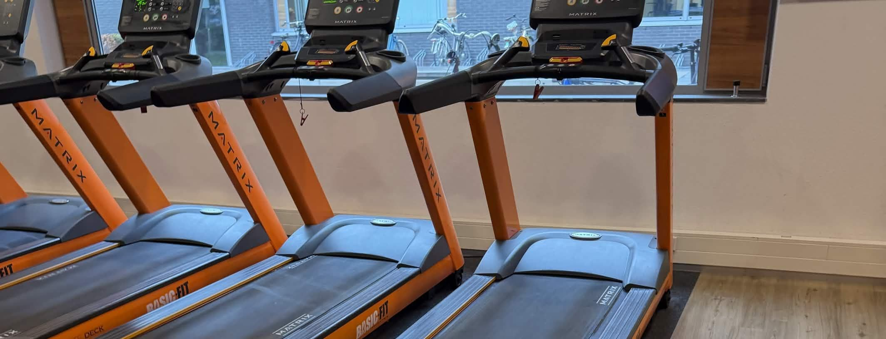
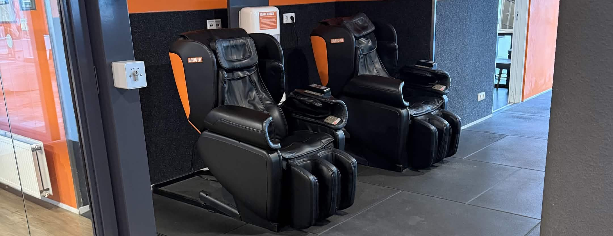

Maandag
Full body
Voor ouders met jonge kinderen kan het lastig zijn om regelmatig naar de sportschool te gaan. Met een eenvoudige planning en voldoende rust wordt sporten makkelijker vol te houden.
Full body
Rustdag
Bovenlichaam
Rustdag
Benen & core

Begin je training met enkele minuten rustig wandelen op de loopband om je lichaam voor te bereiden.
5 minuten · rustig tempo ·

Geef je lichaam na een training tijd om te herstellen. Zorg voor voldoende slaap, gezonde voeding en rustdagen.
· ·
Probeer vaste dagen te kiezen waarop je gaat sporten. Zo wordt trainen een onderdeel van je wekelijkse routine.